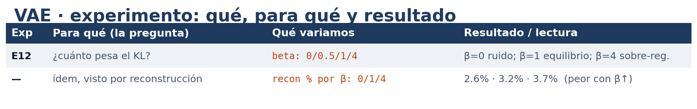
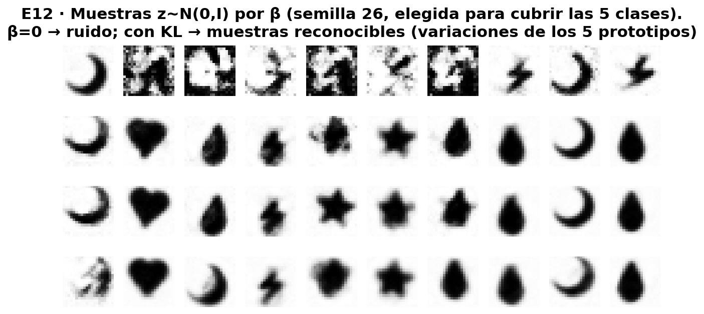
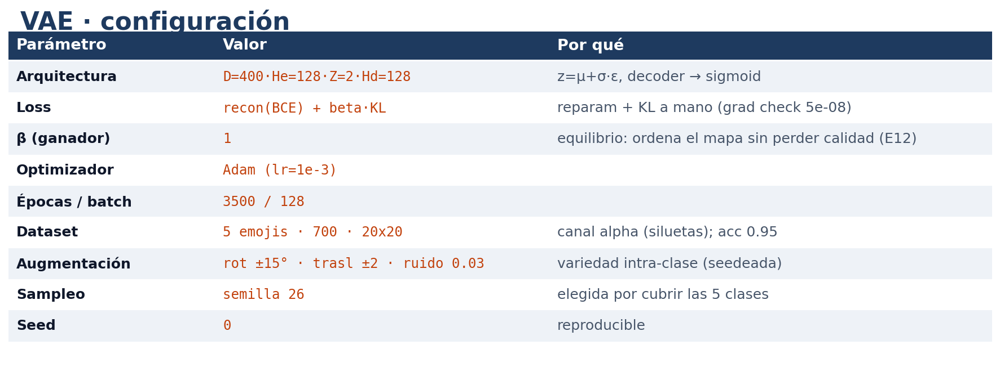
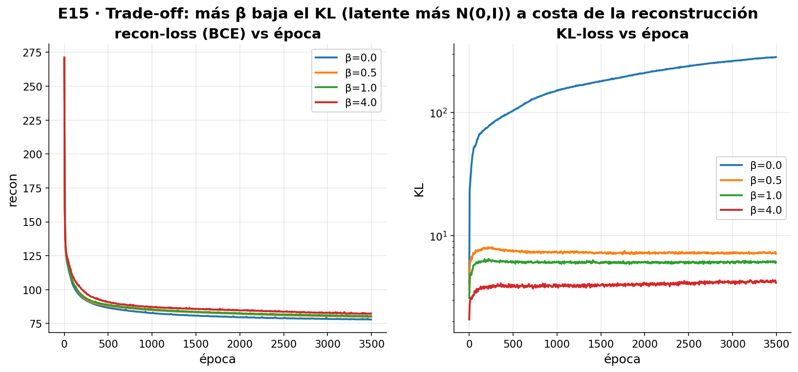

Autoencoders
TP5 — Deep Learning
Sistemas de Inteligencia Artificial · ITBA · 1Q 2026
Nicolás Valentín Arias · Tomás Pinausig · Mateo Pirola · Katia Menshikoff
Dataset: 32 caracteres ASCII


La configuración base
| Arquitectura | 35-20-2-20-35 (capas [35, 20, 2, 20, 35]) |
| Activaciones | tanh · identity (cuello) · tanh · sigmoid (salida) |
| Init de pesos | auto por capa (Xavier para tanh/sigmoid, He para relu) |
| Loss | BCE — heredada del TP3 (datos binarios) |
| Optimizador | SGD — arranque naive |
| Épocas · batch | 6000 · 32 (full-batch) · semilla 0 |
- Aprovechamos lo implementado en el MLP del TP3.
Elección de optimizador
| Variamos | SGD(0.5) · Momentum(0.1) · Adam(0.01) |
| Config fija | 35-20-2-20-35 · tanh · BCE · latente 2 · 6000 ep |
Adam llega a 0 px

- Vemos sobre las barras del gráfico de error la cantidad de ascii recuperados perfecto / sin error.
- SGD se estanca (5px), Momentum casi (1px), Adam: 0 px. → adoptamos Adam(0.01).
- Vemos que usar Adam ya logra superar la limitación del espacio latente de dimensión 2.

¿Qué tan grande el paso? (learning rate)
| Variamos | lr ∈ 0.0003 · 0.01 · 0.3 |
| Config fija | 35-20-2-20-35 · tanh · BCE · Adam · latente 2 |
0.01 es el punto justo

- Vemos sobre las barras del gráfico de error la cantidad de ascii recuperados perfecto / sin error.
- LR 0.0003 tarda — con más épocas podría llegar al mismo resultado; LR 0.3 no aprende (error de 28px!); LR 0.01 llega a 0.
- Elección final → LR 0.01
Arquitectura → Tamaño de la capa oculta
| Variamos | () · 10 · 20 · 30 · 20+20 (por lado) |
| Config fija | tanh · BCE · Adam(0.01) · latente 2 |
| Nota | (20) = 1 capa de 20 por lado; (20+20) = 2 capas apiladas |
20 neuronas es el mínimo justo

- Sin capa oculta = PCA (falla); 10 no alcanza; 20 → 0 px. 30 y 20+20 empatan → por parsimonia, 20.
Tamaño del espacio latente
| Variamos | dimensión latente ∈ 1 · 2 · 3 |
| Config fija | 35-20-·-20-35 · tanh · BCE · Adam(0.01) |
| Nota | la consigna pide 2D; lo confirmamos |
Con 1 solo se aprende un subconjunto

- 1D solo recupera un subconjunto (14/32): no se pueden separar 32 letras en una recta. 2D → 0 px.
- Confirmamos que el cuello de la consigna alcanza: se mantiene latente=2.

Mapa del espacio latente

Inventar letras nuevas


Denoising — Limpiar ruido
¿Cómo ensuciamos las letras?

- Ruido bit-flip: cada píxel se invierte con probabilidad
p, fresco en cada época.
¿Y si le damos ruido al AE de 1a?

- No fue entrenado para limpiar: la salida se deforma a medida que sube el ruido.
El AE de 1a no limpia

- El error crece con el ruido de entrada. Hay que entrenar la red específicamente para limpiar.
Entrenemos un denoiser
- Generamos las entradas ensuciando cada letra con nuestro ruido bit-flip; regeneramos los inputs en cada época (la red nunca ve dos veces la misma "mancha").
- Entrenamos la red con esas entradas sucias, y le exigimos que devuelva la letra original limpia.
- Es la misma red y la misma loss (BCE) que el autoencoder; ahora le pedimos, en vez de
x → x, sucio → limpio.
Nueva arquitectura — Espacio latente
Probamos agrandar la dimensión del espacio latente: 2, 5, 10 y 20 neuronas.

- Medimos el promedio de px incorrectos en los resultados generados vs el input original sin ruido.
- Y la cantidad de letras recuperadas "perfecto" con 20% de ruido (error de px ∈ {0, 1}).
Nueva arquitectura — Capas ocultas

- Con el latente fijo en 10, barremos el ancho de la capa oculta {20, 30, 35, 40}. El salto real es 20→30; de ahí es meseta → por parsimonia, 30.
¿Cuánto ruido al entrenar?

- El 15 % es el mejor compromiso (anda bien en casi todo el rango); cada extremo solo gana en su zona (5 % en limpio, 30 % en ruido alto).
Cualitativamente, ¿qué efecto tiene 30% de ruido sobre los inputs?

Si medimos la cantidad de píxeles coincidentes, el denoiser entrenado al 30% parece comportarse bien — visualmente vemos que la letra recuperada no reconstruye la original :(
Resultado del limpiador

- Deja ≤1 px de error en el 80% de las letras a 15% de ruido (92% a 10%).
Limpio / sucio / recuperado

Generar imágenes nuevas
El nuevo modelo guarda una zona por imagen, no un punto.
- Eso es justo lo que después le permite inventar.
Datos nuevos: emojis

- Elegimos 5 emojis como siluetas claras (descartamos una versión de contornos que se confundía).
Todo lo que probamos

- Lo único que variamos es cuánto ordenamos el mapa (beta).
- Todo el VAE en numpy desde cero, con las cuentas de la red verificadas a mano, una por una.
El ingrediente que ordena el mapa

- Sin ese ingrediente sale mayormente ruido; con él salen emojis de verdad.
Por qué uno genera y el otro no

- Sin ordenar, los puntos quedan desparramados (escala ±decenas); con orden, mucho más juntos (±2, cerca del 0).
Juntando lo mejor

- La receta del VAE ganador: β=1, el equilibrio entre ordenar el mapa y la calidad de imagen.
El mapa de los emojis

- Cada tipo de emoji ocupa su propia zona, separadas por clase (no una sola nube: conserva 5 cúmulos).
Generar muestras nuevas

- Reconstruye y además genera muestras nuevas (no copias), reconocibles: variaciones continuas de los 5 prototipos.
Sampleo honesto del VAE (semilla al azar, sin elegir)

- Semilla 0 fija (no elegida); en promedio aparece ~85 % de las clases (4.3/5) por tirada sobre 200 semillas — el muestreo no siempre cubre las 5.
El mapa completo decodificado

- Los emojis se transforman de a poco uno en otro: genera mezclas continuas, no copia.
El equilibrio

- Más orden = mapa más prolijo pero imágenes un poco peores. Hay que equilibrar.
Conclusiones
- 1a: con curvas y 2 números guardamos las 32 letras perfecto; un método clásico no llega.
- 1b: limpiar ruido necesita un espacio latente más grande, y el ruido de entrenamiento es un equilibrio.
- VAE: ordenando el mapa, el modelo pasa de resumir a generar muestras nuevas (no copias) reconocibles.